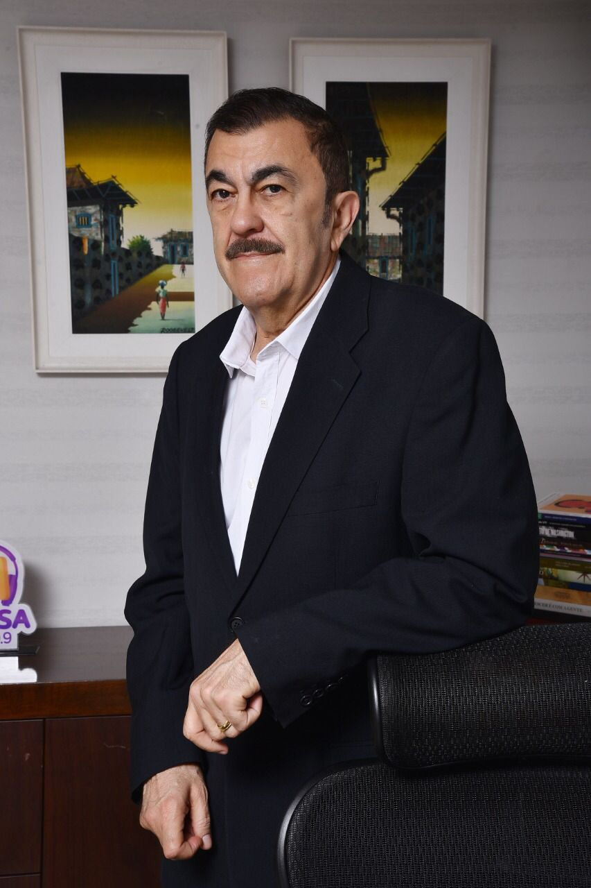

Uma história real de construção de legado — da origem humilde à consolidação de um nome respeitado em múltiplos setores.
Biografia · Legado · Espírito Santo
Rui
Baromeu
O Construtor de Sonhos
Uma trajetória marcada por visão, coragem, comunicação, empreendedorismo e construção de legado.
01 — Sobre o livro
A história por trás
do legado
Em "Rui Baromeu: O Construtor de Sonhos", o leitor é convidado a embarcar na fascinante trajetória de Rui Carlos Baromeu Lopes, um dos empresários mais influentes do Espírito Santo.
Visionário e empreendedor nato, Rui construiu seu próprio nome e consolidou um legado em diversas áreas — comunicação, hotelaria e agronegócio. Ao longo de sua vida, enfrentou desafios e superou adversidades com determinação e fé, transformando oportunidades em grandes realizações.
Este livro revela as múltiplas facetas de um homem que, movido por paixão e propósito, impactou positivamente sua comunidade e deixou sua marca na história.
"Uma biografia-reportagem que revela o homem por trás das realizações — sua obstinação, seus afetos, sua visão de mundo."

02 — Por que ler
Por que ler
este livro
Cinco razões para conhecer esta história
Visão empreendedora aplicada à comunicação, hotelaria, agronegócio e desenvolvimento regional com impacto duradouro.
A comunicação como eixo de transformação — como a mídia serviu de plataforma para idealismo e mudança social.
Passagens de superação, coragem e reinvenção que revelam a força de caráter de um líder visionário.
Um retrato de impacto sobre o desenvolvimento e a memória capixaba — história viva do Espírito Santo.
03 — Indicado para
Para quem
é esta obra
Uma leitura que atravessa gerações e áreas de atuação
Empresários e empreendedores que buscam inspiração em trajetórias reais de liderança e visão estratégica.
Profissionais da comunicação e mídia interessados no papel transformador do jornalismo regional.
Leitores de biografias, liderança e narrativas de superação que valorizam histórias autênticas.
Público interessado na história e no desenvolvimento do Espírito Santo.
Parceiros, instituições, amigos e admiradores da trajetória de Rui Baromeu.
04 — Temas centrais
Os eixos de uma
vida extraordinária
Empreendedorismo
Comunicação
Política
Família
Agro & Hotelaria
Viagens & Visão
Legado & Memória
Uma vida movida por obstinação, visão e propósito. Uma história que parece romance, mas é real — porque nenhuma ficção seria capaz de inventar tanta coragem concentrada em um único homem.
— Sobre a obra Rui Baromeu: O Construtor de Sonhos
05 — A obra
Conheça
a obra
Uma edição cuidadosamente elaborada que honra a grandeza da trajetória de Rui Baromeu. Projeto gráfico autoral, diagramação editorial de alto padrão e fotografia documental que reconstroem, página a página, a vida de um homem que transformou o Espírito Santo.
Biografia-reportagem
Texto de José Roberto Santos Neves
Projeto gráfico de Higor Ferraço
Edição premium com fotografias documentais
06 — Download
Baixe a mídia
digital
Acesse a versão digital da obra "Rui Baromeu: O Construtor de Sonhos". Disponível para leitura em qualquer dispositivo, preservando toda a qualidade editorial da edição original.
Acesso gratuito · Formato digital de alta qualidade
Idealização
Rui Baromeu
Texto e Edição
José Roberto Santos Neves
Texto Inicial e Entrevistas
Bartolomeu Boeno
Supervisão Editorial
Ilda Castro e Jadna Duque
Projeto Gráfico e Editoração
Higor Ferraço